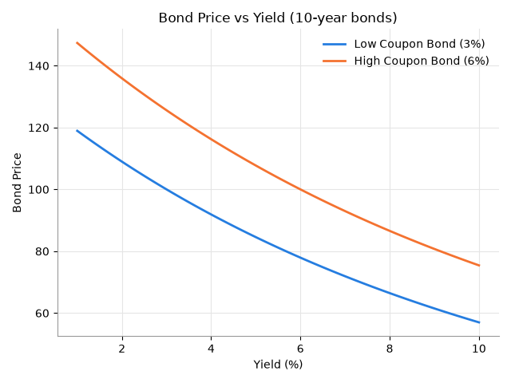
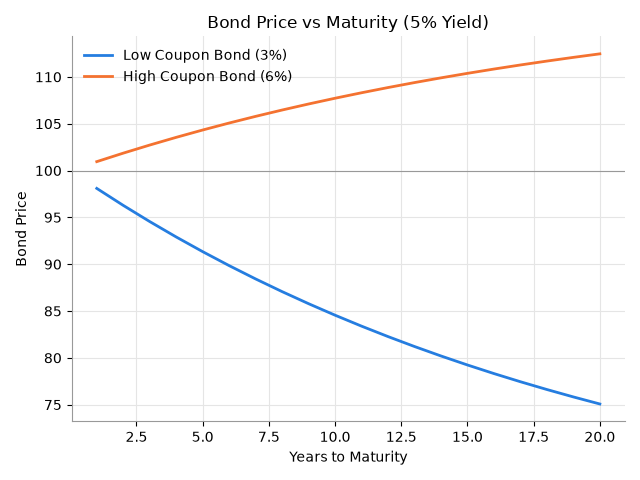
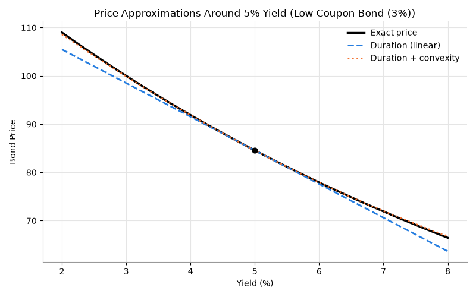

Python • Fixed Income • Quantitative Modelling
This project applies discounted cash flow techniques to price fixed-income securities and analyse how bond values respond to changes in market yields.
The analysis compares two 10-year bonds with face value 100 and annual coupons, priced at a 5% yield:



| At 5% yield | Price | Macaulay duration | Modified duration | Convexity |
|---|---|---|---|---|
| 3% coupon | 84.56 | 8.66 yrs | 8.25 | 82.2 |
| 6% coupon | 107.72 | 7.89 yrs | 7.52 | 72.2 |
| Price change | Exact | Duration only | Duration + convexity |
|---|---|---|---|
| 3% coupon, yield +1% | −7.85% | −8.25% | −7.83% |
| 3% coupon, yield −1% | +8.67% | +8.25% | +8.66% |
| 6% coupon, yield +1% | −7.17% | −7.52% | −7.16% |
| 6% coupon, yield −1% | +7.89% | +7.52% | +7.88% |
Duration estimate: ΔP/P ≈ −Dmod·Δy. With convexity: ΔP/P ≈ −Dmod·Δy + ½·C·(Δy)².
A 1% rise in yield cuts the 3% bond's price by 7.85%, against 7.17% for the 6% bond. This matches its longer modified duration (8.25 vs 7.52) and confirms that lower-coupon bonds carry more interest-rate risk.
Duration alone is a linear approximation, so it overstates price falls and understates price rises, by about 0.35–0.43 percentage points for a 1% shift. Because the price–yield curve is convex, adding the convexity term cuts that error to under 0.02 percentage points.